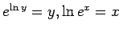

Inhalt Index DeskTop Bronstein

 Funktionen und ihre Darstellung Funktionsbegriff Einige Funktionstypen
Funktionen und ihre Darstellung Funktionsbegriff Einige Funktionstypen


Die Funktion y =f(x) mit dem Definitionsbereich D und dem Wertebereich W ordnet jedem  eindeutig ein zu. Kann umgekehrt auch jedem eindeutig ein
eindeutig ein zu. Kann umgekehrt auch jedem eindeutig ein  zugeordnet werden, so entsteht die Umkehrfunktion oder inverse Funktion von
zugeordnet werden, so entsteht die Umkehrfunktion oder inverse Funktion von  . Sie wird mit
. Sie wird mit  oder auch f-1 bezeichnet. Das Zeichen f-1 stellt in diesem Falle ein Funktionssymbol dar, keine Potenz.
oder auch f-1 bezeichnet. Das Zeichen f-1 stellt in diesem Falle ein Funktionssymbol dar, keine Potenz.
Um von einer Funktion y =f(x) zur Umkehrfunktion zu gelangen, werden x und y vertauscht, und die Gleichung x =f(y) wird nach y aufgelöst, so daß sich  ergibt. Die Darstellungen y =f(x) und
ergibt. Die Darstellungen y =f(x) und  sind äquivalent. Daraus folgen die beiden wichtigen Formeln
sind äquivalent. Daraus folgen die beiden wichtigen Formeln
| Beispiel |
|
Die Funktion ist äquivalent mit . Es gilt . |
Beispiele für Umkehrfunktionen:
| Beispiel A |
|
y =f(x) =x2 mit |
| Beispiel B |
|
y=f(x)=ex mit |
| Beispiel C |
|
mit |
Hinweise: